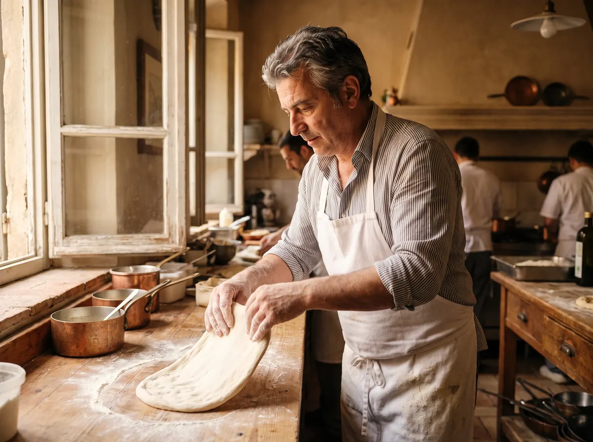
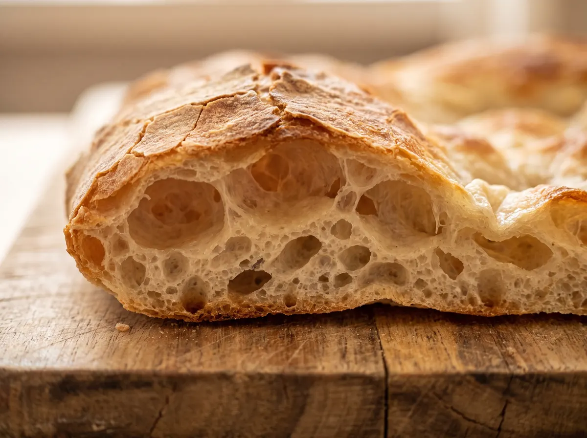
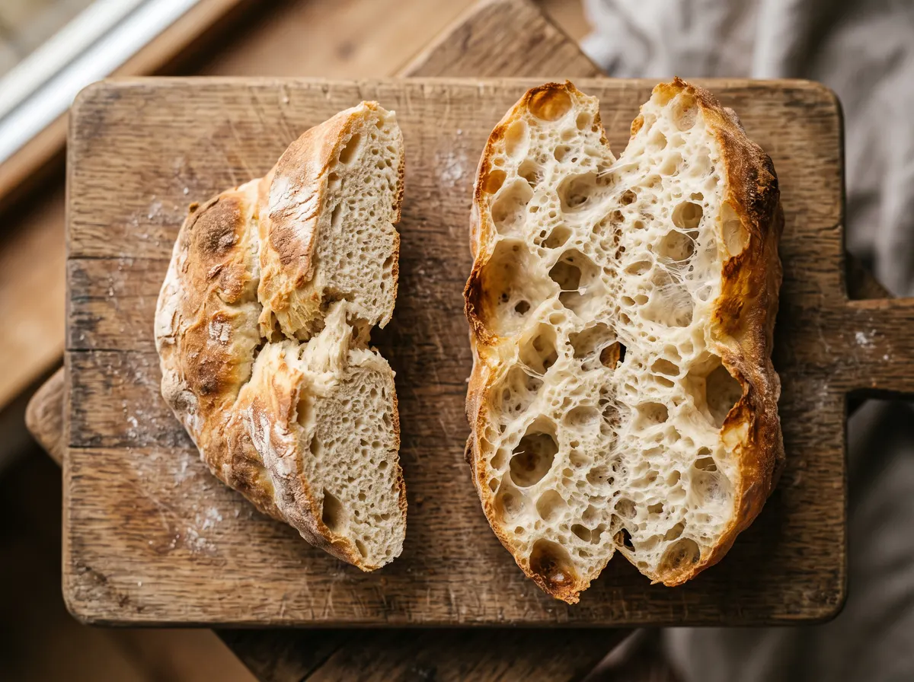
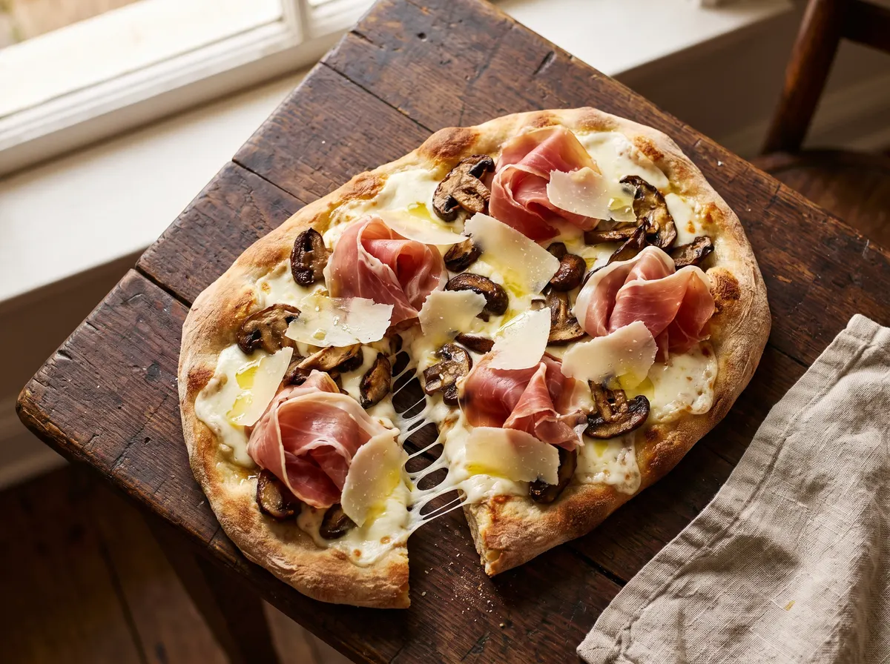
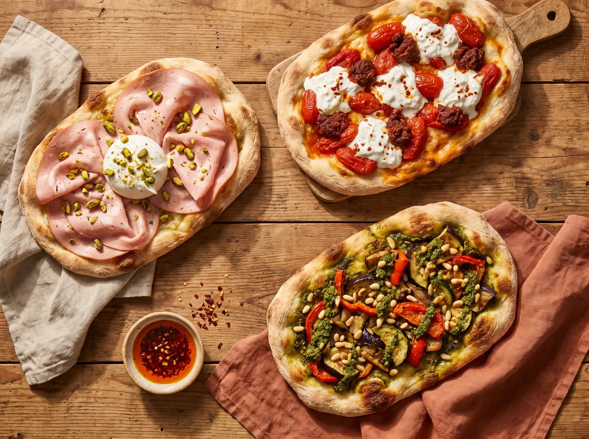
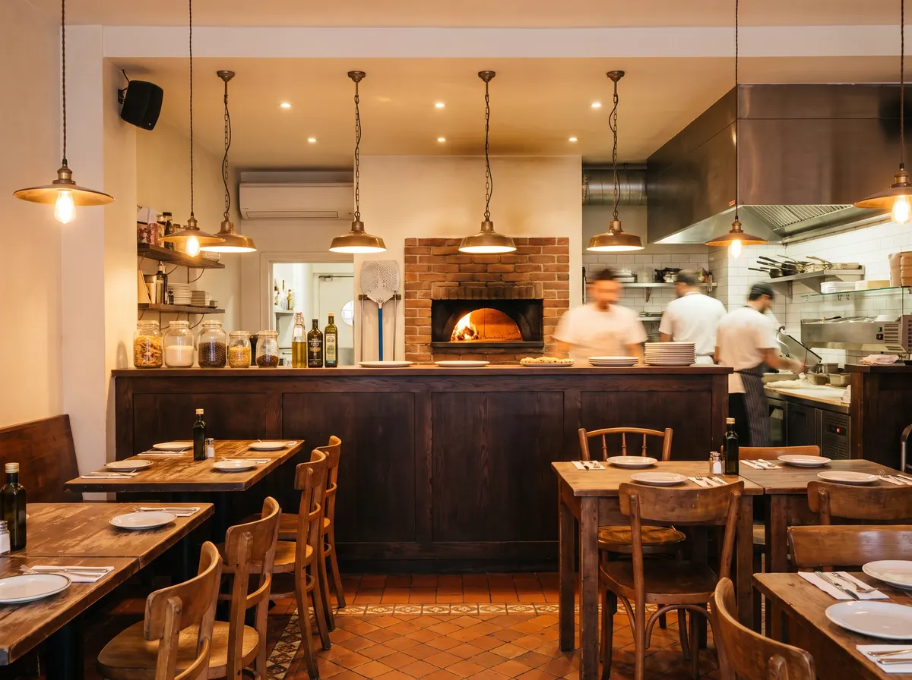
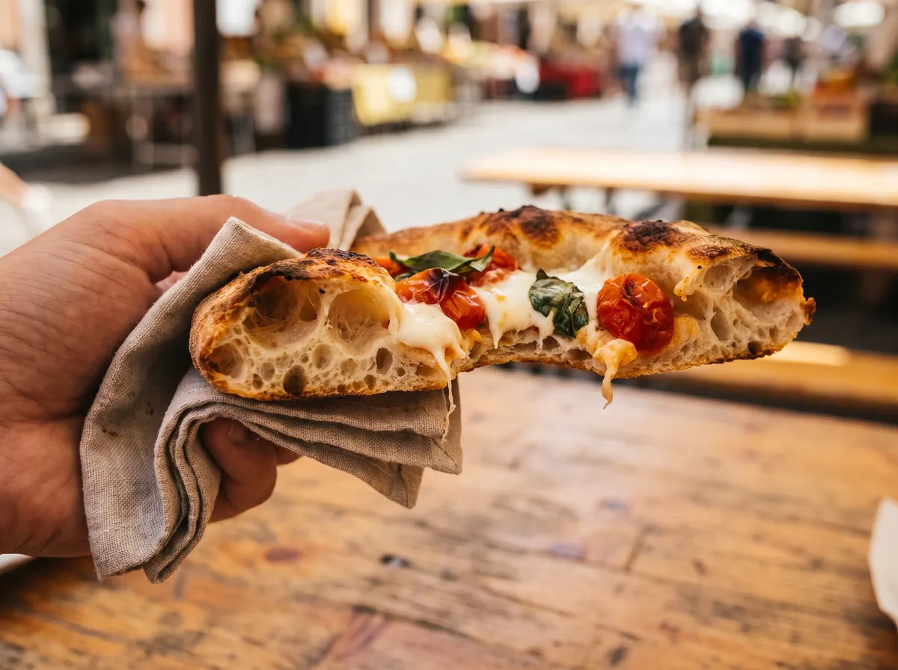

Chef Gabriele Uberti competed twice in the Italian Pizza Championship, built restaurants for Disney, and now serves a 72-hour fermented Roman crust that's crispier, lighter, and easier on your stomach than any pizza in Central Florida.
Here's an underrated find: A small restaurant on South Orange Avenue with something that most of Orlando unfortunately hasn't savoured before.
At this quiet storefront at Sandlake Station, exists a guy who's been cooking since he was 13 years old in Italy and is serving something that doesn't exist anywhere else in this city.
His name is Gabriele Uberti.
He's racked up thirty, long years of professional Italian cooking, as well as two entries in the prestigious Italian Pizza Championship.
And after sixteen years building restaurant concepts for Patina Restaurant Group and Walt Disney World, he opened Daje Pinsa, a Roman-style restaurant serving an ancient Italian flatbread called pinsa that 99% of Americans have never tried.
Here are 5 things worth knowing before you go.
The Chef Has 30 Years in Italian Kitchens. Here's Why He Opened His Own.
If you've dined at a high-end Italian restaurant in a Disney resort, there's a real chance Gabriele Uberti's fingerprints are on the menu.
But after 16 years of breaking records with the prestigious Patina Group, managing multiple 4.8+ star restaurants...
He grew tired of seeing so much wasted potential.
The master-level quality he wanted to give guests, limited by company profits.
They rush the dough, and ingredients get swapped for cheaper versions.
So, Gabriele wanted to do it right. His way. With the 72-hour dough process he grew up with in Rome and the fresh, imported ingredients he trusts.
So he opened Daje Pinsa on South Orange Avenue.

This Isn't Pizza. It's a 2,000-Year-Old Roman Invention.
Most people hear “pinsa” and think it's a fancy word for thin-crust pizza.
But they're not even the same thing.
The word comes from the Latin pinsere, meaning “to press” or “to stretch.”
This is because Ancient Roman farmers and soldiers made flat, oval breads from mixed grains, water, salt, and herbs, baked on hot stones.
Which makes for an airy, light, portable dough that's easy to digest.
The modern version was formalized by Italian flour researcher Corrado Di Marco, who developed a specific flour blend and hydration method based on ancient Roman grain processing.
Pinsa uses three grains: Type 0 Italian wheat, non-GMO soy flour, and cooked rice flour. The wheat and soy give structure and proteins, and the rice flour traps moisture during baking, creating a paper-thin, crispy, crackling exterior while keeping the inside airy.
The result is a crust with 33% fewer carbs and 85% less fat than standard pizza dough.

The Dough Ferments for 72 Hours. That Means Zero Bloating.
The #1 worry with Italian dining is the heavy carbs.
But rest assured, Daje Pinsa is bloat-free.
Real Italian dough isn't even supposed to bloat you in the first place...
This only happens in America because most pizzerias ferment their dough for 4 to 24 hours.
Chain spots do it in under 2 with industrial yeast and dough conditioners.
When dough rises quickly, the starches and gluten proteins inside don't break down.
They stay intact, which means your stomach has to break everything down itself.
Giving you that painful bloating and sluggishness.
Gabriele's pinsa bases go through a 72-hour cold fermentation at near-refrigerator temperatures.
During those three days, the natural enzymes in the flour and sourdough starter break down everything for you.
So you can enjoy the whole thing worry-free.
Gabriele then slides them in the TurboChef oven at 600°F. Which gives it that crackly, crispy shell on the outside, but light on the inside.
Same standards you'd find at a pinseria in Rome, except it's a quick drive from your house.

The Menu Is Short. Every Item Earned Its Spot.
Gabriele didn't build a 40-item menu. Only a handful of classic Roman pinsas, a few signatures he developed, appetizers, and a dessert. That's it. What changes is what goes on top — and this is where 30 years of Italian kitchen experience shows up on your plate.


The Price on the Menu Is the Price You Pay.
This shouldn't need its own section. But if you've eaten at enough Orlando restaurants, you know why it does.
Some local spots charge a 10% mandatory takeout fee. Others add a 3% credit card surcharge at checkout. Some do both. And you only find out on the receipt, not the menu.
Gabriele doesn't do that to you.
He knows the weight of every sweat dollar, so the price listed is the price charged.
What other restaurant puts customers before profits?
And not only does he value your wallet...
Gabriele also values your time.
Each pinsa is on your plate, steaming, in about two minutes. You don't wait longer than 20 minutes for a table and food on your plate.
You just walk in, order, enjoy.
Now, if a restaurant founded by a famous, prestigious chef with true Italian service sounds the least bit exciting to you...
I have great news for you!

Born in Italy · Shared with Orlando
How You Can Enjoy the Most of Daje, Today!
For Daje Pinsa's grand opening, Gabriele wants to give you, as one of his first customers, his very best.
So much so, he had to bat heads with his accountants for 3 weeks to get you something like this.
So… here's what he did for you:
Roman Date Night Bundle
If you're looking for a romantic, savoury evening with your partner, this is the perfect choice: [Bargain Deal — ideally a lot for them to try, and grow customer satisfaction, without hurting profits]. Enough for two. At just [Bargain Price].
Dinner By The Coliseo
If you want to dine like a true Italian family, or a friend's night out, this will be your go-to: [Bargain Deal] to satisfy everybody, at just [Bargain Price].
The Taste Bundle
If you want to try it solo (no shame!), this will give you everything you need: [Bargain Deal] to give you a taste of everything across the board, at just [Bargain Price].
So go ahead and pick your best occasion.
Once you've done that, you'll notice that Gabriele has made it as convenient as possible to order.
If you'd like the full experience… you can take the quick drive and sit down at our restaurant, where we'll take you through exceptional Italian service.
Or, click the button below to view Gabriele's savoury menu on your screen in seconds then order online, all from the same page.
Gabriele and his team will prepare your pinsas right away, so you can order even if you're 10 minutes away. As you walk in, they'll be waiting for you, warm and fresh, so you can enjoy them wherever you want.
So, click the button below, pick the best-looking ones (they're all amazing!) and send us your order!
View the Full Menu & Order Online →Daje Pinsa is at Sandlake Station on South Orange Avenue in SoDo / Belle Isle, Orlando.

Note: the 72-hour fermentation breaks down most of the gluten and starches, making pinsa lighter and easier to digest. But it contains wheat flour. Gluten-reduced, not gluten-free. Not safe for Celiac disease.